Dobar dan! Dobrodošao!
Ja sam Valentina Piršlin. Studentica sam Grafičkog fakulteta u Zagrebu na prvoj godini. Iako sada živim u Zagrebu, inače sam iz Koprivnice. Velika promjena okoline, moram reći. Prije ovoga sam pohađala Srednju školu Koprivnica gdje sam se opredjelila za ekonomisticu, ali sam shvatila kako to zanimanje nije moj životni poziv. Stoga evo me sada ovdje gdje jesam.
Moji se interesi uvelike podudaraju s učenjima Grafičkog fakulteta. Volim dizajn te nastojim pohvatiti sve njegove principe i trikove. Isto tako, želim naučiti i usavršiti baratanje sa što više programa za dizajn poput Illustratora i Photoshopa. Međutim, uvelike me privlači kreativno stvaralaštvo poput slikanja i crtanja bilo to tradicionalno ili digitalno. Naime, ne bavim se samo umjetnošću. U slobodno vrijeme, već dugi niz godina, treniram stolni tenis. Na taj sam način proputovala pola Republike Hrvatske.
Također, obožavam čitati. Jednostavno smatram kako bi svaka osoba s vremena na vrijeme trebala dobiti predah od ovoga svijeta i zalutati u neki drugi (koji nije preko ekrana).
Nadalje, kako bi sve ovo držalo vodu, tu je i galerija mojih radova koju možete pogledati!
Tradicionalna umjetnost
Slikarstvo
Rose Eyes
Pomegranate
Špijuniro Golubiro
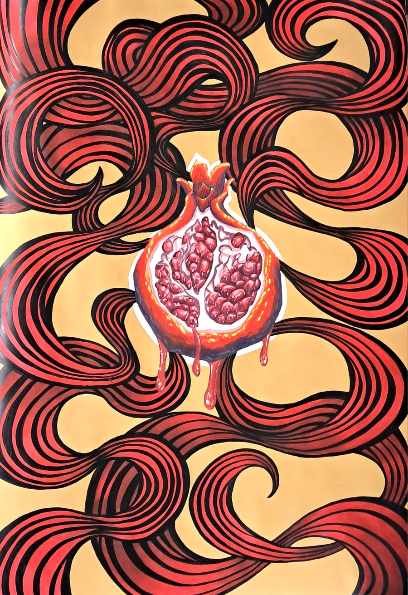
Skice
Lip Swing
Old Man
Tukan
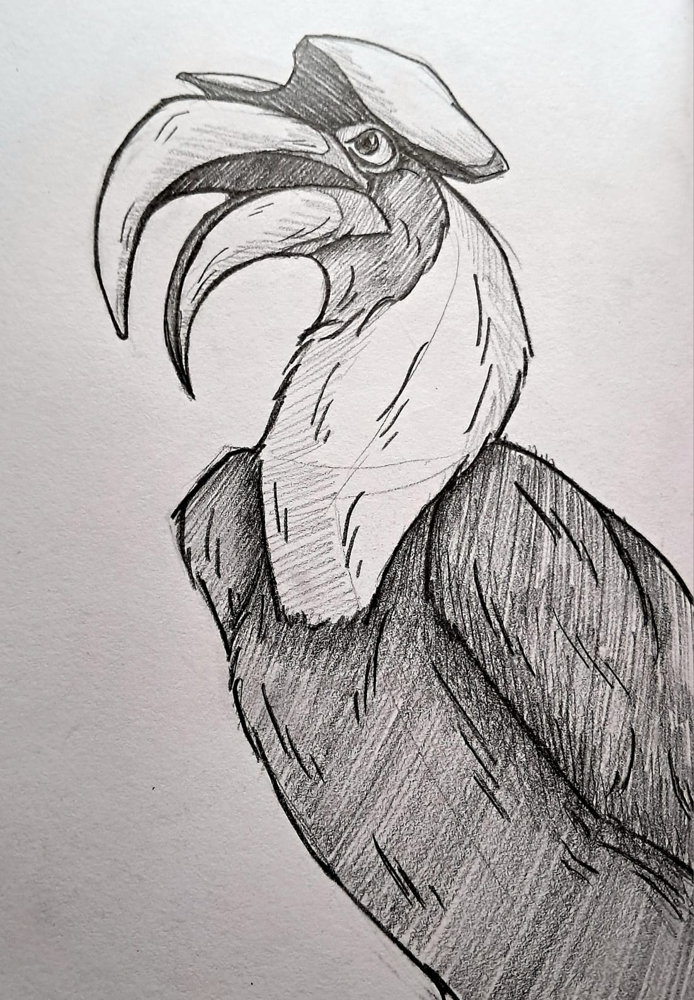
Digitalna umjetnost
Krita
Sharp Snake
Fireworms
Fox
Leavitating Lands
Long nose English dog
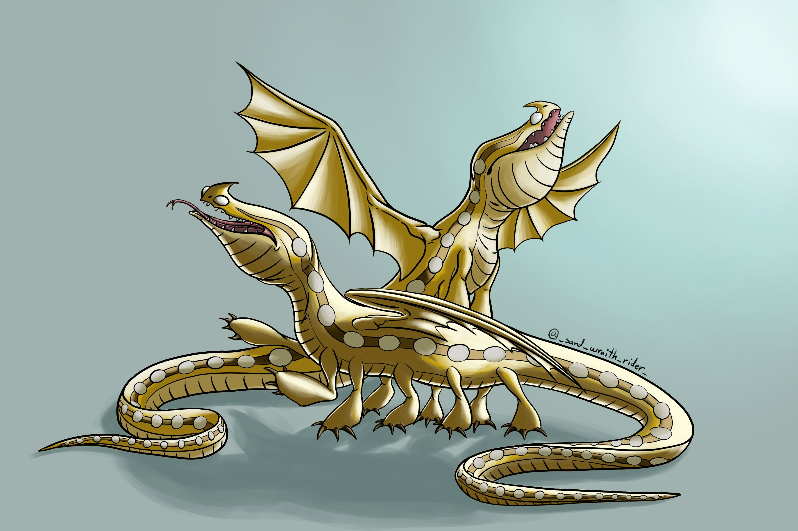
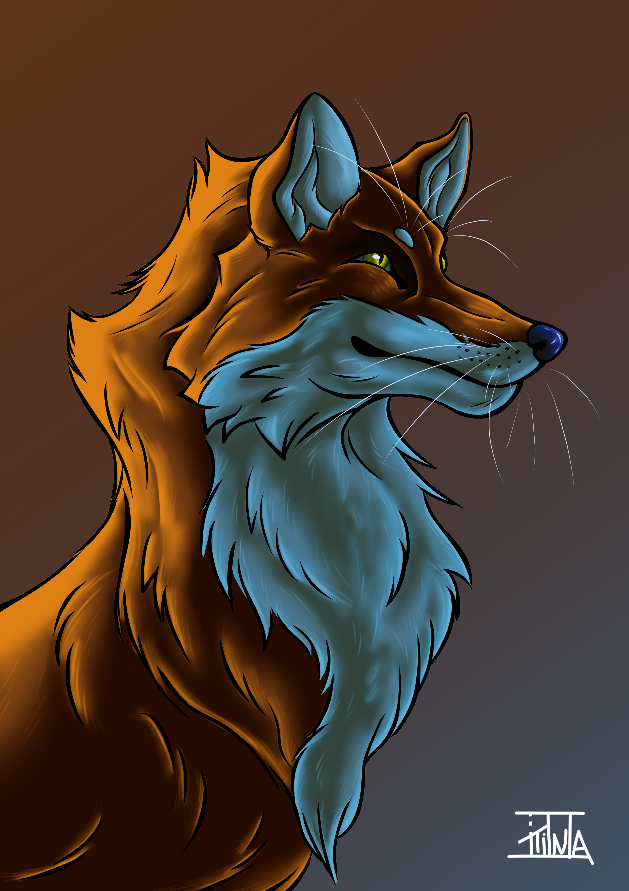
Profil
Nadam se da su vam se slike svidjele!
Ako želite vidjeti još mojih radova, ovdje je link za moj Instagram profil!
 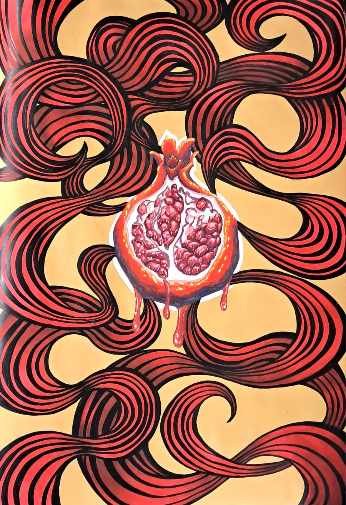
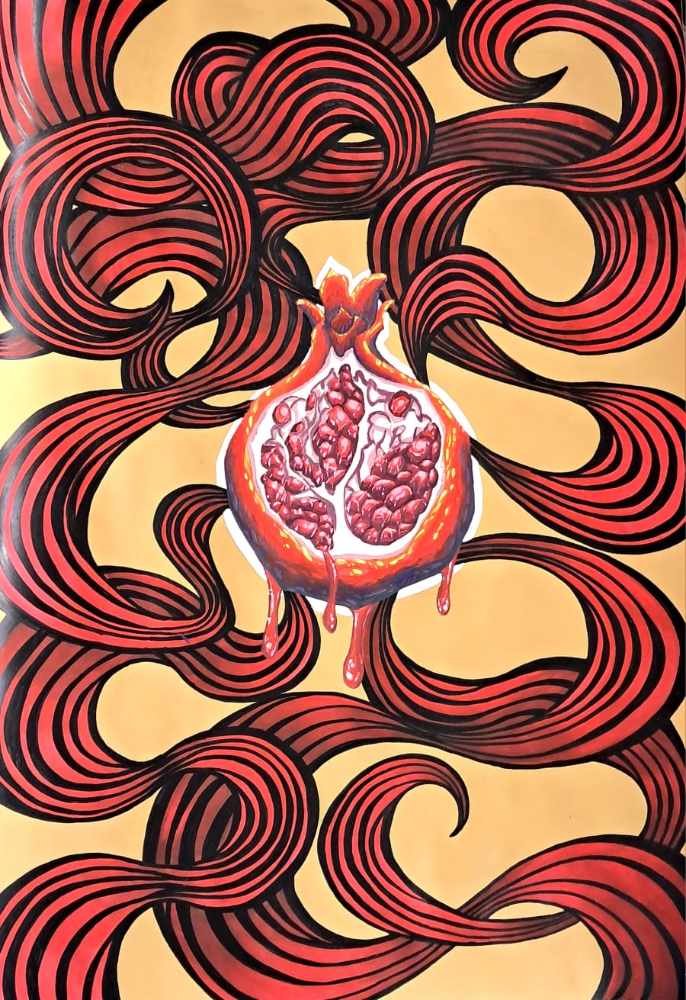


 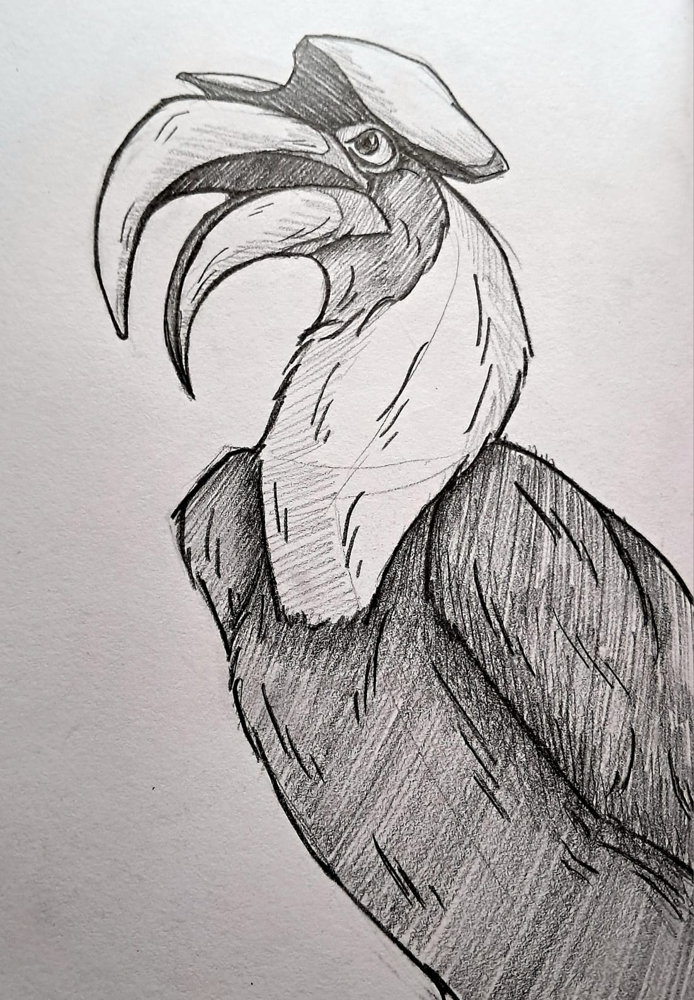
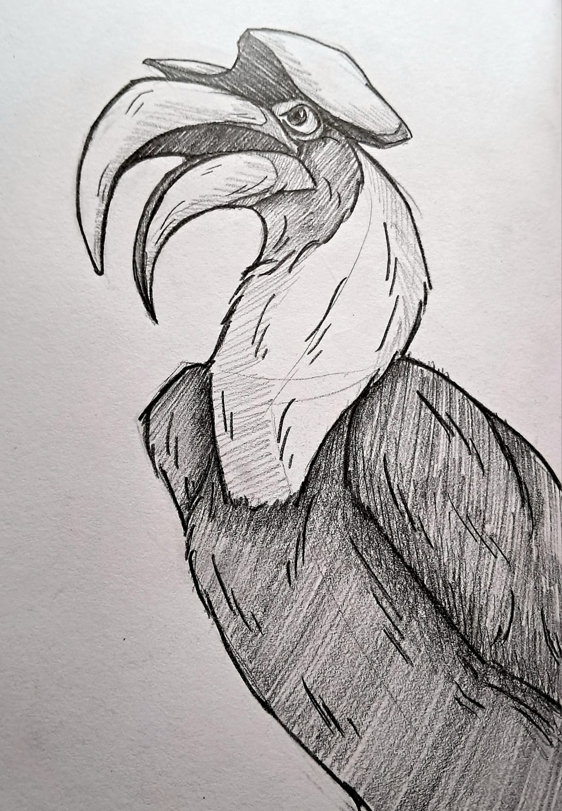
 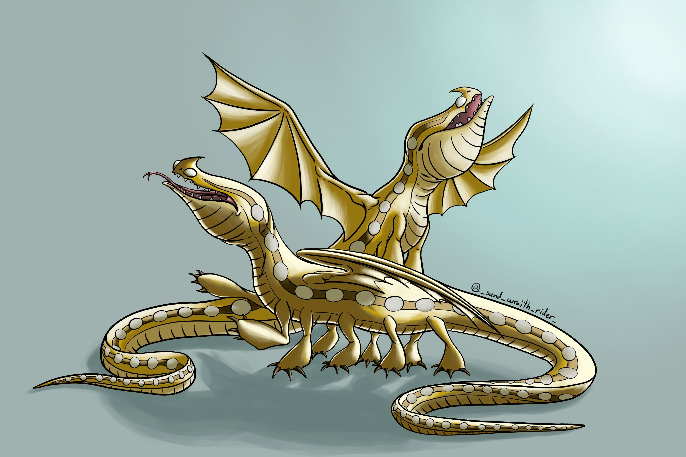
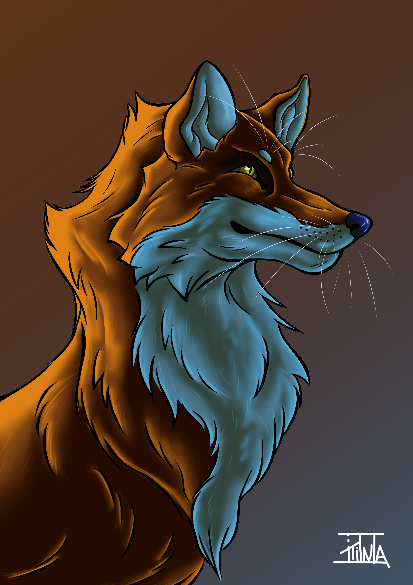
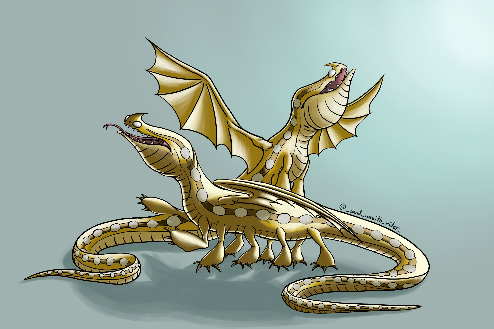
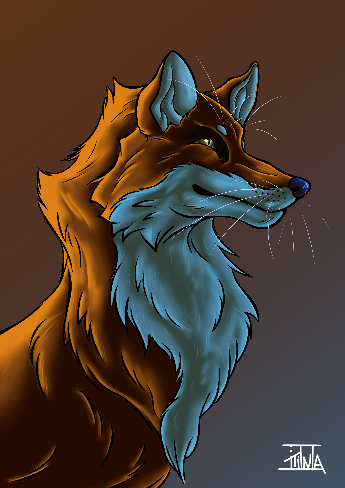